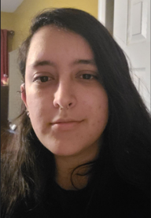

MEET THE TEAM
Joshua Martinez
Backend Developer/Database Engineer
Joshua is a Computer Science major at ODU, expected to graduate in
Fall 2023. He currently lives in Chesapeake, and has hobbies in
playing/making video games and music.
Aaron Rapcavage
Frontend Developer/Team Leader
Aaron is a Senior at Old Dominion University pursuing a Bachelors of
Science in Computer Science with a minor in Cybersecurity.
Donic Adutwum
Frontend Developer/Webmaster
Donic is a senior at ODU and majoring in Computer Science. He
currently resides in Woodbridge, VA. During his free time, he either
read books or plays musical instruments.
Tessa Olden

Frontend Developer/Database Engineer/Webmaster
Tessa is a senior at ODU and is majoring in Computer Science. She
resides in Stafford, VA and plays video games and reads in her free
time.